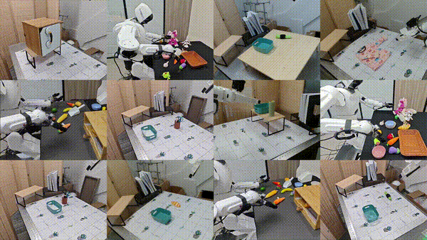

|
Yingying Wu | 巫莹莹 I am an incoming Ph.D. student at the School of Intelligence Science and Technology, Peking University, advised by Prof. Song-Chun Zhu. I received my B.Eng. degree from the Department of Automation at Tsinghua University in 2026. Currently, I am a research intern at the Beijing Institute for General Artificial Intelligence (BIGAI), advised by Dr. Tengyu Liu and Dr. Siyuan Huang. My research interests include Robotics and Dexterous Manipulation. |
{kind=link}
News
|
Publications |

|
TeleDexter: Towards Human-level Dexterous Teleoperation
Puhao Li*, Zeyuan Chen*, Yingying Wu*, Pengkun Wei, Yuyang Li, Tianyu Wang, Jiaxiao Shi, Mingrui Yu, Baoxiong Jia, Song-Chun Zhu, Tengyu Liu, Siyuan Huang [CoRL 2026] Conference on Robot Learning 2026 We introduce TeleDexter, a hand-object co-tracking controller that maps operator intent into learned low-level contact execution for dexterous teleoperation. The system transfers zero-shot to real robots and enables challenging in-hand reorientation and long-horizon tool-use tasks. |

|
ArtManip: Category-Level Articulated In-Hand Manipulation
Yang Yang*, Tengyu Liu*, Puhao Li, Zeyuan Chen, Yuyang Li, Xingwan Wang, Yingying Wu, Zhaopeng Cui, Siyuan Huang [CoRL 2026] Conference on Robot Learning 2026 We introduce the first category-level articulated in-hand manipulation method that generalizes across object instances and diverse initial grasps. The system combines automated articulated-object and functional-grasp synthesis with robust two-stage policy learning, enabling zero-shot transfer to real objects with varied shapes and joint mechanics. |
|
 |
ControlVLA: Few-shot Object-centric Adaptation for Pre-trained VLA models
Puhao Li, Yingying Wu, Ziheng Xi, Wanlin Li, Yuzhe Huang, Zhiyuan Zhang, Yinghan Chen, Jianan Wang, Song-Chun Zhu, Tengyu Liu, Siyuan Huang [CoRL 2025] We introduce ControlVLA, a few-shot object-centric adaptation method for pre-trained VLA. By reducing demonstrations requirements, ControlVLA lowers barriers to deploying robots in diverse scenarios. |
|
Borrowed from Jon Barron. |